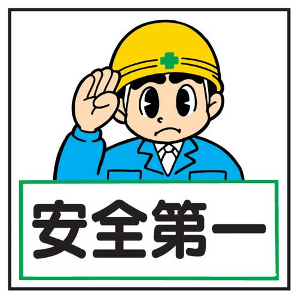
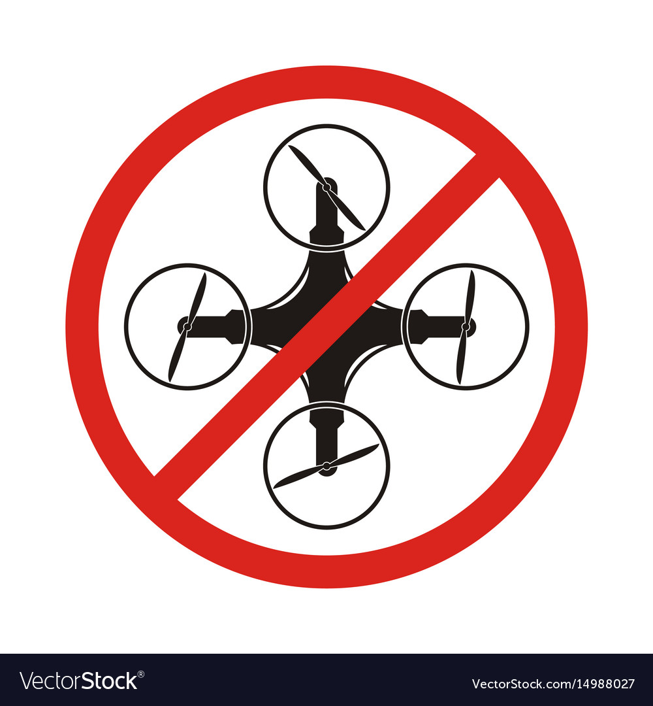
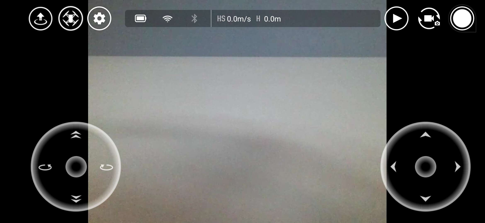
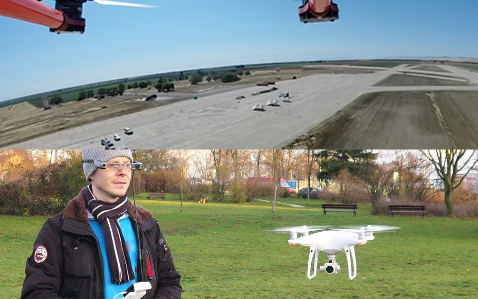

第 2 课 首飞任务 - 机场巡逻
（Airport Patrol）
schedule45 分钟
stars初级（Beginner）
face3-6 年级
一. 安全（Safety）
一. 安全（Safety）
- 【勿贴近高速旋转的螺旋桨】以免割伤。
- 【勿触摸机身底部】发热部件，以免烫伤。
- 【电池】使用标配电池，勿使电池正负极短路。
- 【14 岁以下孩子】不能单独使用，需在成人陪同下使用。
- 【儿童】不能接触。
二. 法律法规
二. 法律法规（Law）
- 禁止在载人飞行器附件飞行。
- 禁止在人口或建筑物密集地区使用飞行器，如城市、体育馆、展会、演唱会等。
- 禁飞区包括：交通要道、政府大楼、军事设施、机场、发电站、水电站、边境线、监狱、主要城市。
- 禁止在超过限定高度的空域飞行。
- 确保飞行器在您的视距范围内飞行。
- 禁止使用飞行器搭载任何违法危险物品。
- 在飞行前务必获取相关部分颁发的许可证。
- 清楚了解飞行活动类别（如娱乐、公务、商务等），可咨询当地法务工作者。
- 使用飞行器进行拍摄时，务必尊重他人隐私权。在某些国家拍摄即侵犯他人权利。
- 禁止使用飞行器进行任何未经授权的监视活动，如对他人、团体、活动、表演、展会、楼宇进行监视。
三. 飞行限制（Restriction）
三. 飞行限制（Restriction）
- 保持飞行高度在 10m 以下，飞行时远离任何高大建筑物。
- 视觉定位系统使用高度为 0.3-30m，适合在室内以及室外无风环境下飞行。
- 视觉定位系统容易受光照强度、物体表面纹理情况所影响，在视觉定位系统失效时，飞行器会自动切换到「姿态模式」，所以以下场景需谨慎使用。低空（0.5m 以下）快速飞行时，视觉定位系统可能会无法定位；纯色表面（如纯黑、纯白、纯红、纯绿）；特别暗（光照小于 300 lux）或特别亮（光照大于 10000 lux）的物体表面；纹理特别稀疏的表面；纹理重复度很高的物体表面（如颜色相同的小格子砖）；细小的障碍物；飞行器速度不宜过快，如离地 1m 处飞行速度不可超过 5m/s；
- 当飞行器飞行高度大于 6m 时，若视觉定位系统失效超过 3s，飞行器会触发失效保护并开始降落，降落过程中若视觉定位系统恢复则飞行器会在当前位置保持悬停。
- 如 Tello App 提示视觉定位系统在当前环境下无法正常工作（如光线太暗），请勿起飞。
四. 移动操作练习（Move）
TT 无人机基本操作
- 【准备遥控器】即「手机 + Tello App」，打开 Tello App。
- 【准备 TT 无人机】按一下电源按键，开启 TT，黄色指示灯会闪烁。
- 【连接遥控器和 TT】在 Tello App 上点击「连接」按钮，选择 Tello-xxxx 无线名，指示灯黄色慢闪且 App 中出现视频画面则表示连接成功。
- 【起飞】点击左上角「起飞」按键，TT 会自动起飞并悬停在空中。
- 【降落】点击左上角「降落」按键，TT 会自动降落到地面。
- 【移动】点击上下、左右、前后、平移等按钮，TT 会按指示移动。
五. 第三人称视角（Third Perspective）
五. 第三人称视角（Third Perspective）
- 【第一人称视角】屏幕上不出现玩家所控制的游戏主角，而是表现为主角的视野。如反恐精英、绝地求生。
- 【第三人称视角】以旁观者的视角观察场景与主角的动作。视角通常处于玩家所控制的游戏单位的上方，所以也被称为「上帝视角」。
六. 机场巡逻（Airport Patrol）

六. 机场巡逻（Airport Patrol）
- 【What】即「手机 + Tello App」，打开 Tello App。
- 【Why】点击上下、左右、前后、平移等按钮，TT 会按指示移动。
- 【How】按一下电源按键，开启 TT，黄色指示灯会闪烁。